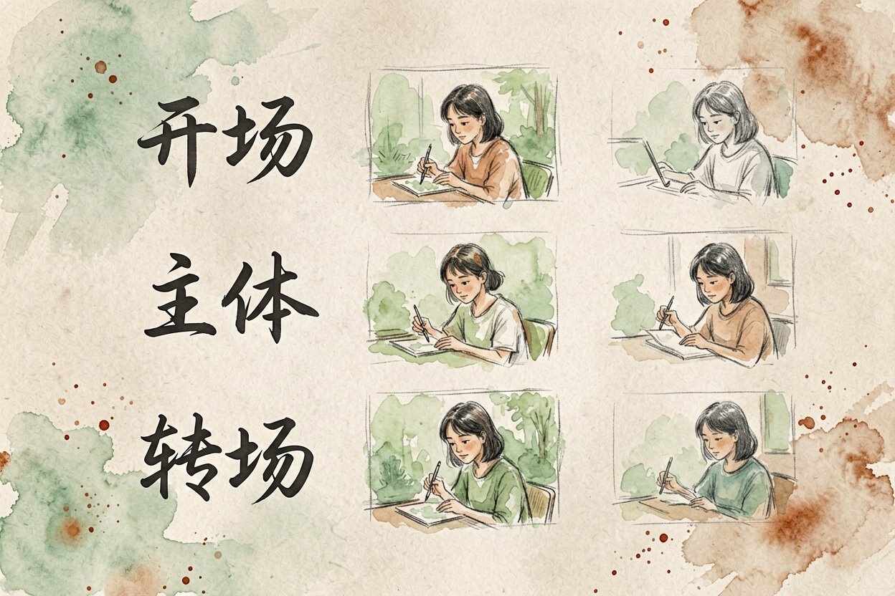
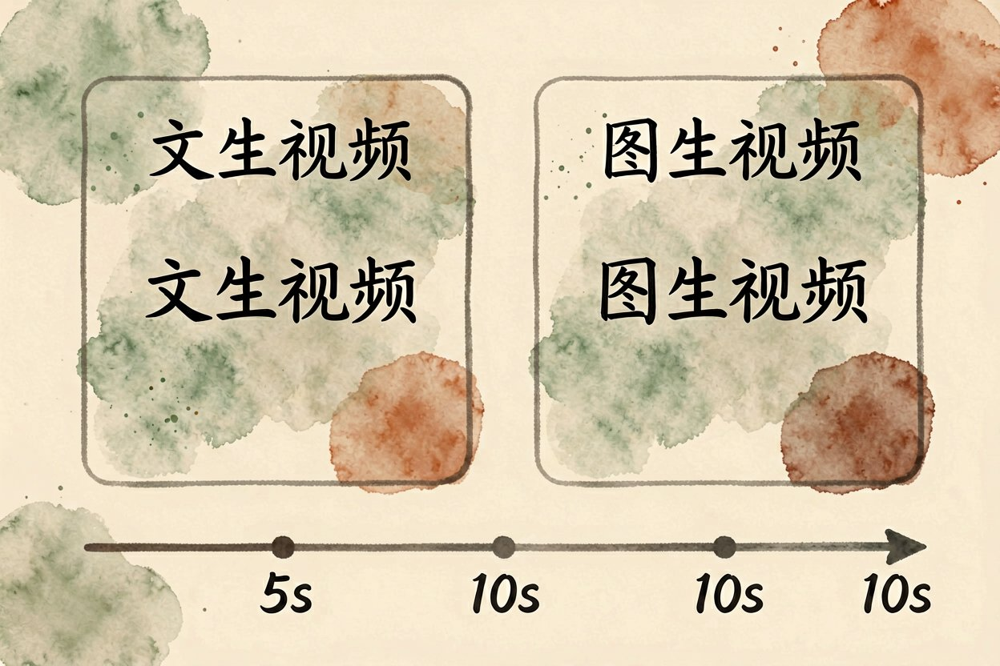

AI 视频生成实操：用可灵和即梦做第一段短视频
想做短视频却不会剪？用 AI 视频生成，写一句话或传张图，几分钟就能拿到一段能用的片子。
AI 视频生成是什么：从一句话到一段片子

AI 视频生成，就是输入一段文字或一张图片，模型直接产出几秒到几十秒的动态画面。你不用会运镜、不用买相机，只要把想看的镜头描述清楚。和AI 视频生成原理讲的是一件事，只是这里侧重怎么动手。
它分两条路。文生视频靠文字想象画面，适合脑子里有想法没素材。图生视频拿你的图当起点，画面更稳、更可控，做口播和数字人常用。新手建议从文生视频练手，容错高、试错便宜，跑通后再碰图生视频。
动手前先准备这三样

先写一句核心文案，说清这段视频讲什么、给谁看。再找一张参考图，哪怕是随手拍的，也能让图生视频不乱跑。最后定好画幅，发抖音快手用竖屏九比十六，发号里用横屏。
别一打开就瞎试。先想清楚时长，新手建议从五到十秒练手，生成快、试错便宜。文案越具体，出片越贴近你想要的样子。把主体、动作、光线、风格各写一句，比写一整段废话管用。
用可灵生成第一段文生视频
打开可灵，选文生视频，把镜头写细：主体、动作、光线、风格各一句。中文提示词现在还原度已经很高，不用硬翻英文。描述里加「镜头缓慢推进」这类运镜词，成片更有电影感。
视频提示词示例：
镜头缓慢推进，一只橘猫趴在窗台晒太阳，
午后阳光斜照，窗帘轻微飘动，电影感，横屏 1080P。生成后看预览，人物别变形、动作别断层就下载。不满意就改动词重生成，别反复在同一段上烧积分。同一段多生成两版挑好的，比死磕一版省时间。
用即梦做图生视频
即梦适合你已经有图的情况。上传参考图，写一句「让画面里的水流动起来」这类动作指令，它照着图的结构动。做商品展示、风景延时最稳，因为主体不会变。上传前把图裁好构图，模型只负责让静止的部分动起来。
角色一致性是难点。同一人物要出多镜头，尽量用同一张脸图当参考，别每段换图。和AI 视频脚本写作配合，先有脚本再出画面，效率最高。脚本定好分镜，再逐镜生成，拼接时不乱。
拼接导出与控制成本
多段视频在剪映里拼起来，加字幕和转场，导出前统一分辨率和帧率。免费额度每天有限，集中练手别分散试。高峰期排队久，错峰生成更省时间，清晨或深夜通常更快。
成本上记住三件事：先用免费档跑通流程，再决定要不要开会员；长视频分段生成比一次硬刚更稳；导出后人工看一遍，变形处剪掉别将就。不同平台计价单位不同，有的按秒、有的按条，开会员前先看单价。AI 视频生成是创作助力不是替身，关键镜头仍要你把关。别把 AI 视频生成当成一次性交差，分段验证才不出废片。
本文信息核对于 2026-08-24。AI 产品的价格、免费额度与功能变动频繁，实际以各工具官网当前说明为准。